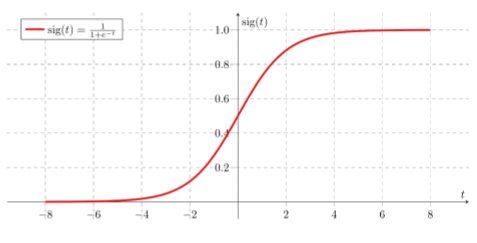
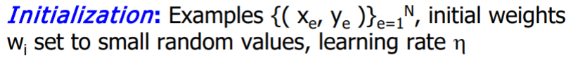

Multilayer Perceptrons
Multilayer perceptron (MLP)
- It is a hierarchical structure of several perceptrons, which overcomes the shortcomings of the single-layer networks.
- The MLP neural networks is able to learn to learn nonlinear function mappings.
- Learning a rich variety of nonlinear decision surfaces.
- Nonlinear functions can be represented by MLPs with units that use nonlinear activation functions.
- Multiple layers of cascaded linear units still produce only linear mappings.
Differentiable Activation Functions 可微的激活函数
- Training algorithms for MLP require differentiable, continuous nonlinear activation functions.
Sigmoid function
Such a function is the sigmoid function:
where s is the sum:
which is the products from the weights wi and the inputs xi.

Hyperbolic tangent
- Another nonlinear function often used in practice is the hyperbolic tanget:
the mean of tanh is 0
Multilayer Network Structure
A two layer neural network implement the function:
where
is the output of first layer which is regard as the input of second layer.
we can find the output of sigmoid from above Sigmoid function and the function here plus a bias w0 (Woj and Wok, for first layer and second layer respectively)
The hidden units enable the multilayer network to learn complex tasks by extracting progressively more meaningful information from the input examples.
The MLP has a highly connected topology since every input is connected to all nodes in the first hidden layer, every unit in the hidden layers is connected to all nodes in the next layer, and so on.
The input signals, initially these are the input examples, propagate through the neural network in a forward direction on a layer-by-layer basis, that is why they are aften alled feedforward multilayer networks.
Representation Power of MLP
Properties concerning the representational power of MLP:
Learning arbitrary functions: any function can be learned with an arbitrary accuracy by a three-layer network;
Learning continuous functions: every bounded continuous function can be learned with a small error by a two-layer networ (the number of hidden units depends on the function to be approximated)
Learning Boolean functions: every Boolean function can be learned exactly by a two-layer network although the number of hidden units grows exponentially with the input dimension
Backpropagation Learning Algorithm
MLP became applicable on practical tasks after the discovery of a supervised training algorithm, the error backpropagation laearning algorithm.
The error backpropagation algorithm includes two passes through the network:
- forward pass
- backward pass
During the backward pass the weights are adjusted in accordance with the error correction rule. The actual network output is subtracted from the given output in the example and the weights are adjusted so as to make the network output close to the desired one.
The backpropagation algorithm does gradient descent as it moves in direction opposite to the gradient of the error, that is in direction of the steepest decrease of the error.
This is the direction of most rapid errpr decrease by varying all the weights simultaneously:
By gradient descent search, backpropagation training algorithm minimizes a cost function E (the mean square difference between the desired and actual net outputs).
The network is trained initially selecting small random weights and then presenting all training data incrementally.
Weights are adjusted after every trial using weights converge and the cost function is reduced to an acceptable value.
Algorithm part
Initialization

Repeat
For each training example (x,y)
Forward
- calculate the outputs using the sigmoid function:
where O i = X i
Backward
- compute the benefits βk at the nodes k in the output layer:
Every node on output layer only has one output, so benefit βk only compute Yk - Ok where is target value minus actual value
Effects from the output nodes
yk is the target output, ok is the actual output
- compute the changes for weights j→k on connections to nodes in the output layer:
Δwij is the weights to the corresponding output in hidden layer
Δwoj is the bias
Effects from the output of the neuron
- compute the benefits βj for the hidden nodes j with the formula:
Every node on hidden layer has multi nodes on output layer, so benefit βj has to compute the sume of benefit βk times weight wjk
Effects from multiple nodes in the next layer
- compute the changes for the weights i→j on connections to nodes in the hidden layer:
Δwij is the weights to the corresponding output in output layer
Δwoj is the bias - update the weights by the computed changes:
w = w + Δw
Unitl termination conditon is satified
On-line Training
Revision by example is called **on-line(incremental) training